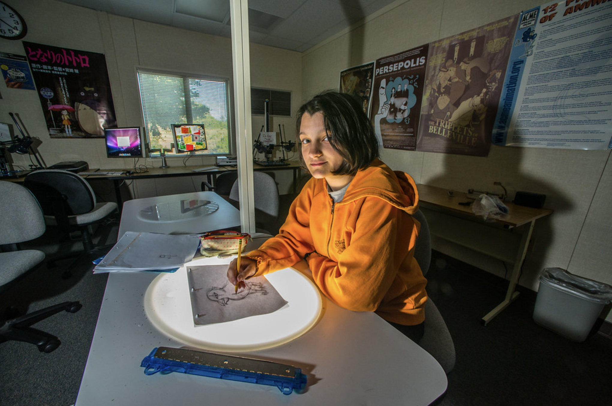
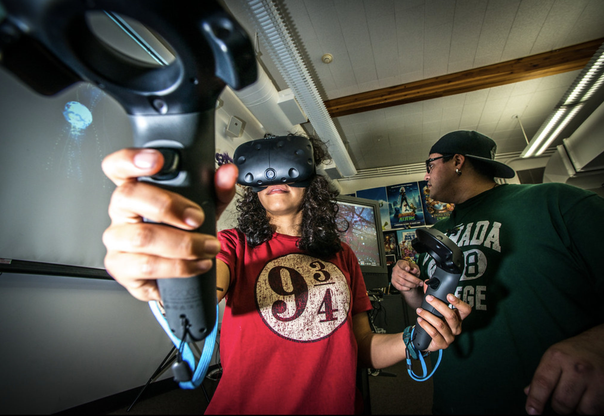

Welcome to the Digital Art & Animation Department
Cañada's Digital Art & Animation (MART) Program is training the next generation of media-makers in animation, graphic design, video game art and design.The Digital Art & Animation Program offers opportunities for students to earn Associate degrees, to transfer to four-year institutions, to earn Certificates of Achievement, and to gain knowledge and skills needed in the workplace. At the heart of the program is the commitment to provide students with real-life, hands-on experiences that will prepare them for immediate employment and for upper division coursework. A practical curriculum offers real-world experience with current software applications and digital equipment.
Our program is designed to serve the needs of our wide range of students when it comes to course scheduling. Classes in the Digital Art & Animation Program are taught in the mornings, afternoon, evenings and online to accommodate our students with full-time jobs.
Take a look at our programs:
Graphic Design

The Graphic Design program includes basic visual literacy and visual communication classes that provide real-world hands-on learning experiences.
Learn More →Digital Ilustration

The Digital Illustration program prepares students for entry-level work in the visual media industry providing the complete software necessary for employment.
Learn More →Video Game Design

The Video Game Design program provides students the opportunity to develop specialized knowledge to meet industry standards.
Learn More →